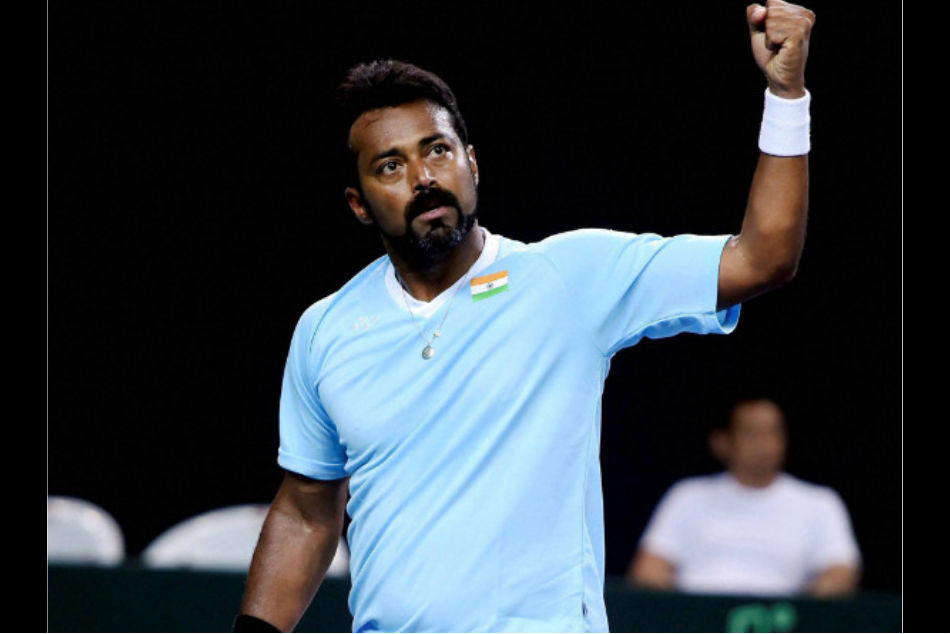

Tennis is mostly mental You win or lose thee match before You even go out there.
Indian tennis great Leander Paes on Monday stressed on the need to focus on learning new skills during the coronavirus-forced lockdown to keep oneself mentally and physically fit.
Speaking at an Education Webinar for coaches, jointly organised by the All India Tennis Association (AITA) and the Sports Authority of India (SAI), Paes touched upon various topics including his junior days, transition to men's circuit, the role mental fitness plays in tennis, dealing with pressure, nutritional knowledge and coaching tips. "It is important to focus on learning new skills during the lockdown," Paes said on how to best utilise the time away from tennis action and keep oneself active and mentally fit.
India has been under lockdown for more than a month now to contain the highly contagious disease, raising concerns about mental health of athletes. Talking about what keeps him going even at the age of 46, Paes said: "For me, the relationships that I have had through tennis are the things that I cherish the most. "Those relationships over generations are what's special," the 18-time Grand Slam champion was quoted as saying by AITA's official website. The Atlanta Olympic bronze medallist also went down memory lane and singled out RK Khanna and Anil Khanna for special mention. "When I started playing tennis, R.K Khanna was the president of the AITA. I would not be who I am today without Khanna because he actually helped me in the juniors, as a 14 or 15 year-old," he said. "He helped me get into the ITF junior team. At that point, my family could not afford all the international coaching. And after that, Anil Khanna, who was the president, took over the mantle of support." Paes also had a message for coaches who had joined the webinar. "Greatest joy you can have is to see your students do well at tennis. Use the sport as a vehicle to make them good human beings," he signed off.
Calling the partnership with Laxman a memorable moment of his career, Rahul Dravid said it was the period when the crowd really got behind the Indian team.Read More...
ISL: Sunil Chhetri scored the only goal of the match in the 55th minute, helping his side maintain their unbeaten streak in the Indian Super League (ISL) this season.Read More...